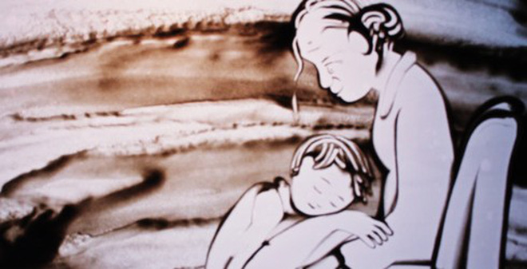
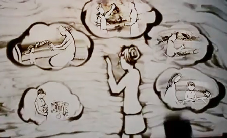

私について
| 項目 | 内容 |
| 名前 Name |
グェン ヴァン ハイ NGUYEN VAN HAI |
| 学籍番号 Studen Number |
AP18021@azec.ac.jp |
| 生年月日 Date of Birth |
1994年06月10日 |
| 出身国 Country of Origin |
Ninh Binh 県 Ninh Binh Prefecture |
趣味について詳しく
私の趣味
NHẬT KÝ CỦA MẸ

Bao ngày mẹ ngóng,bao ngày mẹ trông.
Bao ngày mẹ mong con chào đời.
Ấp trong đáy lòng có chăng tiếng cười,
Của một hài nhi đang lớn dần.
Mẹ chợt tỉnh giấc và Mẹ nhìn thấy,
Hình hài nhỏ bé như thiên thần,
Tiếng con khóc òa mắt mẹ lệ nhòa.
Cám ơn vì con đến bên Mẹ, Này con yêu ơi con biết không. Mẹ yêu con yêu con nhất đời, Ngắm con ngoan nằm trong nôi. Mắt xoe tròn ôi bé cưng, Nhìn cha con cha đang rất vui. Giọt nước mắt lăn trên khóe môi, Con hãy nhìn kìa cha đang khóc vì con.
Một ngày tỉnh giấc rồi Mẹ chợt nghe, Vụng về con nói: Mẹ ơi! Chiếc môi bé nhỏ thốt lên bất ngờ, Khiến tim Mẹ vui như vỡ òa.
Đây là mặt đất, đây là trời cao, Đây là nơi đã sinh ra con. Bước chân bé nhỏ bước đi theo cha, Dấu chân đầu tiên trên đường đời.
Này con yêu ơi con biết không, Mẹ yêu con yêu con biết bao. Hãy cứ đi Mẹ bên con, Dõi theo con từng bước chân.
Ngày mai sau khi con lớn khôn, Đường đời không như con ước mơ. Hãy đứng lên và vững bước trên đường xa.
Ngày đầu đến lớp Mẹ cùng con đi, Ngập ngừng con bước sau lưng Mẹ. Tiếng ve cuối hè hát vang đón chào, Ánh mặt trời soi con đến trường.
Ngày ngày đến lớp dần dần con quen, Bạn bè thầy cô yêu thương con. Bé con của Mẹ vẫn luôn chăm ngoan, Khiến cho Mẹ vui mãi trong lòng.
Này con yêu ơi con biết không, Mẹ yêu con yêu con rất nhiều. Những khuya ôn bài con thức, Xót xa tim Mẹ biết bao. Từng kỳ thi nối tiếp nhau. Tuổi thơ con trôi qua rất mau, Ước chi con Mẹ mai sau sẽ thành công. Một ngày Mẹ thấy con cười vu vơ.
Nụ hồng con giấu trong ngăn bàn, Lá thư viết vội có tên rất lạ. Chắc là người con thương rất nhiều. Một ngày Mẹ thấy con buồn vu vơ.
Cánh hồng vẫn ở trong ngăn bàn. Lá đâu đã vàng, hoa đâu đã tàn, Cớ sao nhìn con úa thu sang.
Này con yêu ơi con biết không, Mẹ yêu con yêu con rất nhiều. Những kỷ niệm lần đầu yêu, Suốt một đời đâu dễ quên.
Vầng trăng kia sẽ sưởi ấm con, Và sau cơn mưa nắng sẽ trong. Sẽ có một người yêu con hơn Mẹ yêu.
Một ngày con lớn một ngày con khôn, Một ngày con phải đi xa Mẹ. Bước chân vững vàng khó khăn chẳng màn, Biển rộng trời cao con vẫy vùng.
Một ngày chợt nắng, một ngày chợt mưa, Lòng Mẹ chợt nhớ con vô bờ. Nhớ sao dáng hình nhớ sao nụ cười, Nhớ con từng giây phút cuộc đời.
Này con yêu ơi con biết không, Mẹ yêu con yêu con nhất đời. Ở nơi phương trời xa xôi, Hãy yên tâm Mẹ vẫn vui. 
Từng dòng thư ôm bao nhớ thương, Mẹ nhờ mây mang trao đến con. Chúc con yêu được hạnh phúc, mãi bình an. Bao ngày Mẹ ngóng, bao ngày Mẹ trông, Bao ngày Mẹ mong con quay về. Ấp trong giấc mộng nhớ bao tháng ngày,
Bé con hồn nhiên bên dáng Mẹ. Mẹ chợt tỉnh giấc và Mẹ nhìn thấy, Con Mẹ vẫn bé như thiên thần. Thấy con khóc òa mắt Mẹ lệ nhòa, Cám ơn vì con đến bên Mẹ.
Thấy con khóc òa mắt Mẹ lệ nhòa, Cám ơn vì con đến bên Mẹ.